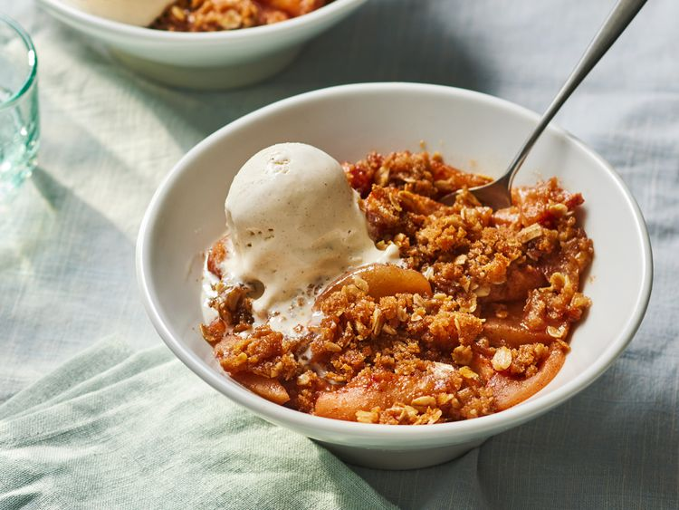

Go back
Apple Crisp with Oat Topping

Description
This easy apple crisp has a topping made with oats, brown sugar, cinnamon, and butter. It's the best dessert for early fall.
Within ten minutes of going in the oven, the scent will fill the air, and neighbors will invite themselves in and wonder aloud if there is any left!
Ingredients
- 6 apples - peeled, cored, and sliced
- 2 tablespoons white sugar
- 1 ½ teaspoons ground cinnamon, divided
- 1 cup brown sugar
- ¾ cup old-fashioned oats
- ¾ cup all-purpose flour
- ½ cup cold butter
Steps
- Gather all ingredients. Preheat the oven to 350 degrees F (175 degrees C).
- Toss apples with white sugar and ½ teaspoon cinnamon in a medium bowl to coat; pour into a 9-inch square baking dish.
- Mix brown sugar, oats, flour, and 1 teaspoon cinnamon in a separate bowl.
- Cut in cold butter with two knives or a pastry blender until the mixture resembles coarse crumbs.
- Spread over apples and pat down gently until even.
- Bake in the preheated oven until golden brown and sides are bubbling, about 40 minutes.
- Serve and enjoy!